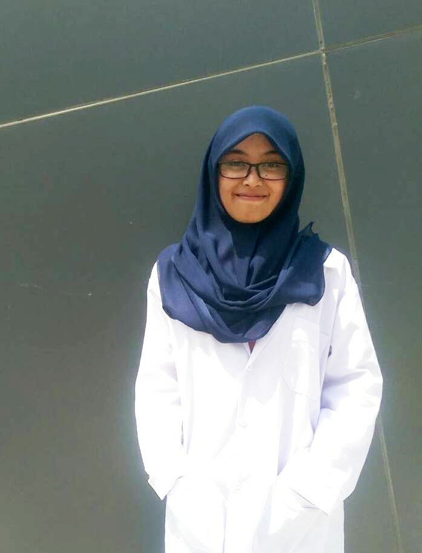

AYU MAULIANA BILQIS |
 |
| Information System
Kalimantan Institute of Technology ayumaulianabilqis@gmail.com 085820141480 |
|
Riwayat Pendidikan2002 - 2008 SDN 1 Plaosan 2008 - 2011 SMPN 3 Plaosan 2011-2014 SMAN 3 Magetan |
|
Riwayat Organisasi2012-2013 Divisi Diklat PALAGA 2012-2013 Bendahara CHO 2014-2015 Sekertaris SHUNT 2016-2017 Ketua Departemen Marketing KOPMA |
|
Riwayat Kepanitiaan2012-2013 Ketua Panitia MOPL PALAGA 2012-2013 Bendahara Workshop CHO 2013-2014 Sekertaris Diklat SHUNT 2015-2016 Koordinator Publikasi AKSI 2016-2017 Sie Dokumentasi LKMM TD III ITK 2016-2017 LO ETAM ITK 2016-2017 Sie Konsum LKMM Pra-TD |
|
| Riwayat Pelatihan
2015-2016 LKMM Tingkat Pra Dasar 2015-2016 LKMM Tingkat Dasar II ITK 2016-2017 LKMM PP II ITK |
| BIODATA | KETERANGAN |
|---|---|
| Nama | Ayu Mauliana Bilqis |
| Tempat/Tanggal Lahir | Magetan, 27 April 1996 |
| Jenis Kelamin | Perempuan |
| Agama | Islam |
| Kewarganegaraan | WNI |
| Alamat | Jl. Raya Sarangan Plaosan RT 15 RW 002 |